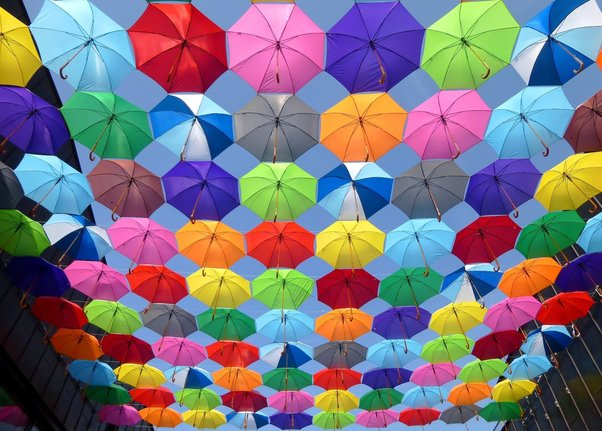

How Colors Affect the Way We Feel
Colors have always been known to influence human psychology. They can affect mood, emotions, and perceptions in various ways. The choice or combination of colors can evoke different emotional responses and associations that help convey messages and heighten aesthetic appeal, especially in research and UX/UI design.
Color choices are integral in designing products as they solidify brand recognition and identity. They also play a vital part in addressing accessibility as sufficient color contrast and color-coded information can help those with visual impairments. But which specific colors prompt positive or negative emotions? Which specific colors actually impact our mood or even mental health?
Colors can evoke positive and negative emotion
Johann Wolfgang von Goethe, a polymath and writer, was the first to correlate colors to specific emotional responses in his book Theory of Colours. He divided colors into two categories: "plus" and "minus".
The "plus" category includes colors that induce positive feelings such as yellow, red-yellow, and yellow-red.1 Other studies also show that natural and pastel shades brought a feeling of calm and softness.1 In particular, the color green has been seen to alleviate stress and enhance calm feelings, while people found pale brown to be warm, soft, and quietly supportive. A soft pale peach color was also found to be associated with feelings of care, warmth, and friendliness.
On the other hand, Goethe discusses "minus" colors like blue, red-blue, and blue-red to induce negative feelings. Similarly dark colors such as black and gray have cultural connotations of anxiety and depression.
In another study, red in particular was perceived as eliciting higher arousal and excitement. However, several mental health studies recommend not placing red alongside information regarding self-harm. This is vital when it comes to designing products such as therapeutic apps and websites for aiding people in distress.
Color brightness and saturation influence mood and mental health
Color brightness means “how little black is mixed in” while color saturation means “how little white is mixed in.” A study of the Pleasure-Arousal-Dominance (PAD) emotion model by Mehrabian & Russell in 1974 demonstrated that color brightness can increase pleasure and decrease arousal and dominance. In this case, pleasure means general positive and negative feelings experienced, while arousal refers to the level of alertness and physical activity.10 Dominance, on the other hand, indicates feelings of control, non-restriction, and autonomy.
In addition to brightness, higher color saturation was found to increase all three of these domains: pleasure, arousal, and dominance. This ties in with previous studies demonstrating that participants perceive joy more in images that are brighter and more saturated.
Let’s understand this better using the example below:

If you’re using a blue hue, as in this figure, you might choose from a variety of brightness and saturation levels, including
- Light blue (high brightness, low saturation)
- Azure (high brightness, high saturation)
- Bluish gray (low brightness, low saturation)
- Indigo (low brightness, high saturation)
Though each of these is a variant of blue, each elicits different emotional responses in the viewer. For instance,
- Light blue would be fairly pleasurable but not arousing or dominant, eliciting a feeling of tranquility
- Azure would be the most pleasurable and somewhat arousing but not dominant, eliciting a feeling of amazement or awe
- Bluish gray would be the least pleasurable and fairly neutral for arousal and dominance, eliciting a feeling of boredom
- Indigo would be the most arousing and dominant but neutral-positive for pleasure, eliciting more of a feeling of boldness or antagonism
Stress has been seen to be subdued by soft blues and greens, as these colors are reminiscent of nature such as rolling fields, blooming gardens, soothing rivers, or blue skies. The calming influence of these two shades found in nature is commonly implemented in many hospitals and animal healthcare facilities around the world.
Other studies show that purple-blue hues in images were received positively as they gave a feeling of calm, harmony, and simplicity, optimal for visual comfort. This is particularly important for healthcare professionals or designers who are developing resources for people in distress.
While color can have a significant impact on mental health and well-being, it's important to recognize that individual responses to color can vary. Cultural and personal factors may also play a role in how a certain use of colors and imagery is perceived.